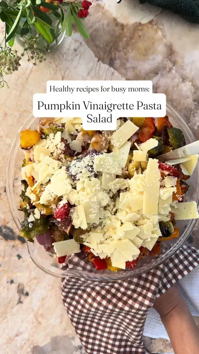

Always in caption :) Roasted Veggie & Bacon Pasta Salad

Ingredients
- 1 box (16 oz) pasta
- 3 whole bell peppers, chopped
- 1 large red onion, chopped
- 1–2 cups halved Brussels sprouts
- Olive oil, paprika, garlic powder, salt, and pepper
- 3–4 slices bacon, chopped Cook the pasta according to package
Steps
- ; drain and cool.
- Toss the peppers, onion, and Brussels sprouts with olive oil, paprika, garlic powder, salt, and pepper, top with the chopped bacon, and roast at 350°F for about 30 minutes until tender.
- Combine the cooled pasta with the roasted veggies and bacon, then toss with the pumpkin vinaigrette.
- Add shaved Parmesan (about a cup) Storage Keeps well in the fridge for 3–4 days in an airtight container—great for meal prep.
- Pumpkin Vinaigrette Ingredients • ½ cup pumpkin puree • ½ cup olive oil • ¼ cup apple cider vinegar • 3 tablespoons maple syrup • 1 tablespoon grainy mustard • 1 teaspoon thyme • 1–2 teaspoons chili pepper flakes • 1–2 teaspoons salt and pepper Wisk pumpkin puree, oil and vinegar, maple syrup, mustard, thyme, chili flakes, salt, and pepper until smooth.
- Taste and adjust seasoning; thin with a splash of water if needed.
Recipe text as written by @mountain_mothering on TikTok. Open original